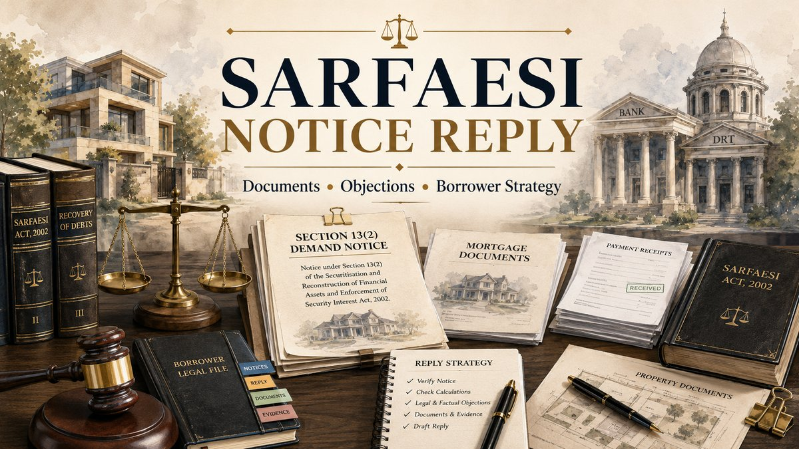

Last updated: July 2026.

A reply to a SARFAESI demand notice should not be a generic denial or an emotional request for additional time. It should identify the loan facility, secured debt, parties, security documents, account entries, payments, classification record, secured asset and the precise factual or legal objection requiring consideration by the secured creditor.
What should you do immediately after receiving a SARFAESI notice?
Preserve the complete notice, envelope, postal record, email and every annexure received with it. Record the date and mode of receipt. The date matters because a demand notice under Section 13(2) requires the borrower to discharge the secured liability within sixty days from the date of the notice before the secured creditor may proceed to the measures identified in Section 13(4).
Do not respond from memory. Create a working file containing the sanction documents, repayment history, account statements, mortgage or hypothecation papers, correspondence and every payment made after default. A notice reply is useful only when its figures and objections can be supported by identifiable records.
Receipt of the notice should also trigger an immediate review of pending settlement discussions, restructuring requests, insurance claims, subsidy credits, disputed charges, earlier recovery proceedings and any proceedings before a civil court, consumer forum, insolvency forum or Debt Recovery Tribunal.
Confirm whether the notice is under Section 13(2)
The first page should be checked for the statutory provision, name of the secured creditor, authorised officer, borrower and guarantor details, loan account, amount demanded and description of the secured asset. Under Section 13(3), the notice should provide details of the amount payable and the secured assets intended to be enforced if the secured debt is not paid.
A borrower should distinguish a Section 13(2) demand notice from an ordinary recall notice, loan-default communication, possession notice, auction notice or notice issued in tribunal proceedings. Different documents mark different procedural stages and require different responses.
Identify the borrower, guarantor and secured asset
The statutory definition of borrower is broad enough to include a person who received financial assistance, gave a guarantee or created a mortgage or pledge as security for that assistance. The notice should therefore be checked against the actual role of every addressee.
Confirm whether the notice correctly identifies:
- The principal borrower and each co-borrower.
- The guarantor and the guarantee document relied upon.
- The mortgagor or owner who created security over property.
- The loan facility, sanction date and account number.
- The property, machinery, receivables or other secured asset.
- The title deed, mortgage, charge or hypothecation document creating the security interest.
A reply should not assume that every person named in the notice has the same liability or executed the same documents. The capacity in which each person signed must be verified.
Documents required before preparing the reply
The documents should be arranged in separate groups so that the account, security and communication record can be tested independently.
- Loan application, sanction letter and subsequent renewal or modification letters.
- Loan agreement, facility agreement and repayment schedule.
- Guarantee deeds, mortgage papers, memorandum of deposit of title deeds and hypothecation documents.
- Complete account statements from disbursement through the notice date.
- Payment receipts, bank transfer records and deposit acknowledgements.
- Interest-rate revision notices and details of penal interest or other charges.
- Loan recall notices, default communications and prior replies.
- Restructuring, settlement, one-time-settlement or compromise correspondence.
- Insurance, subsidy or third-party credit records relevant to the outstanding balance.
- Proceedings or orders before the DRT, DRAT, NCLT, civil court or another forum.
- Property title documents and the description of the asset stated in the notice.
- Proof showing the date and manner in which the demand notice was received.
Verify the outstanding amount and account statement
The amount in the demand notice should be reconciled with the account statement rather than accepted or disputed as a single figure. Prepare a date-wise table showing principal, contractual interest, penal interest, legal charges, insurance, other debits and every payment or credit.
Common accounting questions include whether a payment was credited to the correct account, whether an adjustment was omitted, whether charges were duplicated, whether interest was applied after an agreed restructuring and whether the notice amount corresponds with the stated cut-off date.
A disagreement with the amount should be particularised. State the disputed entry, date, amount, document and proposed corrected position. A reply merely saying that the bank's calculation is incorrect usually provides little assistance.
Check NPA classification and payment credits
For an ordinary secured loan covered by Section 13(2), the statutory stage is linked to default and classification of the account as a non-performing asset. The account record should therefore be reviewed against the applicable regulatory asset-classification framework and the actual repayment history.
The reply may need to identify payments made before or after classification, renewal or restructuring documents, moratorium terms, uncredited deposits, account transfers and correspondence showing how the lender treated the account.
An objection should not assume that every disagreement about classification automatically invalidates the notice. It should identify the applicable dates, the lender's record and the precise consequence alleged.
Review the security documents and asset description
The secured creditor may enforce only the security interest created in its favour and covered by the statutory framework. Compare the property description in the notice with the title documents, mortgage memorandum, charge records and sanction papers.
Check survey numbers, municipal details, boundaries, unit numbers, ownership shares and whether the security covers the entire asset or only a defined interest. For movable assets, verify schedules, identifying numbers, stock or machinery descriptions and the relevant hypothecation record.
Section 26D also makes Central Registry registration relevant to enforcement. The available CERSAI or charge-registration information should therefore be checked with the underlying security documents rather than treated as a substitute for them.
How should objections under Section 13(3A) be structured?
Section 13(3A) requires the secured creditor to consider a representation or objection submitted after receipt of the Section 13(2) notice. If the creditor concludes that it is not acceptable or tenable, the reasons for non-acceptance must be communicated within fifteen days of receipt.
A focused reply may be organised as follows:
- Identify the notice, parties, account and secured asset.
- State the relevant sanction, repayment and security history.
- Set out admitted facts separately from disputed facts.
- Provide an account reconciliation and identify disputed entries.
- State each factual or legal objection under a separate heading.
- Refer to the supporting document against every material objection.
- Request consideration and a reasoned response under Section 13(3A).
- State any concrete payment, restructuring or settlement proposal separately.
The reply should remain consistent. It should not simultaneously deny the loan, admit the complete notice amount and propose settlement without explaining the alternative positions.
Issues that may require specific objection
The relevant objections depend on the documents. Possible issues requiring review may include:
- Incorrect identification of the borrower, guarantor or mortgagor.
- Mismatch between the notice and the loan or security documents.
- Uncredited or incorrectly adjusted payments.
- Disputed interest, penal charges or duplicate debits.
- Incorrect description of the secured asset or ownership interest.
- Prior discharge, release, substitution or modification of security.
- Pending restructuring or settlement terms supported by written records.
- Failure to account for insurance, subsidy or realised security proceeds.
- Central Registry or charge-registration issues relevant to Section 26D.
- A statutory exclusion under Section 31, where genuinely applicable.
- Limitation concerns under Section 36.
Section 31 contains specific exclusions, including security interests created in agricultural land and cases in which the amount due is below the statutory twenty-per-cent threshold. These provisions require document-based analysis; the description of land or the borrower's use of property alone may not resolve the issue.
What happens after the creditor replies?
The secured creditor may accept part of the representation, correct the account, continue settlement discussions or reject the objections with reasons. Preserve the reply and proof of receipt because it becomes part of the procedural record.
The communication rejecting objections does not by itself confer a right to file an application before the DRT under Section 17. The Act expressly separates the objection stage from the later remedy against measures taken under Section 13(4).
A borrower should therefore continue tracking all subsequent communications, including possession notices, publication, applications for assistance under Section 14, valuation steps and sale notices.
When does the DRT remedy arise?
Section 17 permits a borrower or other aggrieved person to apply to the competent Debt Recovery Tribunal after a measure referred to in Section 13(4) is taken. The statutory period is forty-five days from the date of that measure.
The relevant measure and date must be identified precisely. A Section 13(2) notice, rejection under Section 13(3A), possession measure, Section 14 action and auction notice are not interchangeable procedural events.
Jurisdiction may depend on where the cause of action arose, where the secured asset is located or where the relevant account is maintained. The correct DRT, filing requirements, relief and interim-protection strategy should be verified from the current facts and procedure.
Common mistakes in a SARFAESI notice response
- Ignoring the notice while relying only on informal bank discussions.
- Sending a generic denial without an account statement or calculation.
- Failing to distinguish the borrower, guarantor and mortgagor roles.
- Making allegations that contradict signed sanction or security documents.
- Not preserving the envelope, email or proof of receipt.
- Assuming that a settlement request automatically suspends the statutory process.
- Claiming agricultural-land protection without examining title, classification and use records.
- Assuming that rejection of objections immediately creates a Section 17 remedy.
- Waiting until possession or auction proceedings to collect basic loan records.
- Attempting to transfer or deal with secured assets without considering legal restrictions and consequences.
Practical borrower-response checklist
- Record the date and mode of receipt of the demand notice.
- Confirm that the notice identifies the amount and secured assets.
- List every borrower, guarantor, mortgagor and security provider.
- Collect the sanction, loan, guarantee and mortgage documents.
- Obtain and reconcile the complete loan account statement.
- Mark disputed payments, interest and charges with supporting proof.
- Check the NPA and recall chronology against available records.
- Compare the secured-asset description with title and security papers.
- Review Central Registry, statutory-exclusion and limitation issues.
- Draft separate factual, accounting and legal objections.
- Send the representation through a traceable mode and preserve delivery proof.
- Track the creditor's response and every later enforcement step.
Related banking-recovery guides
References / Sources
- Securitisation and Reconstruction of Financial Assets and Enforcement of Security Interest Act, 2002 — India Code.
- Sections 2, 13, 17, 26D, 31 and 36 of the SARFAESI Act, 2002.
- Central Registry of Securitisation Asset Reconstruction and Security Interest of India.
- Debts Recovery Appellate Tribunals and Debts Recovery Tribunals — official portal.
- The applicable Security Interest (Enforcement) Rules, tribunal procedure and regulatory asset-classification directions should be checked in their current form for the relevant lender and proceeding.
Prepare the complete notice, sanction and security documents, account statements, payment records, correspondence and a date-wise calculation before sending a structured enquiry. Do not send confidential material until consultation or formal engagement is confirmed.
Start Case Enquiry